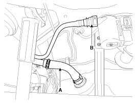
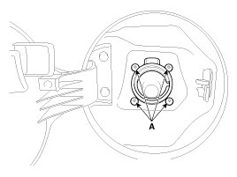
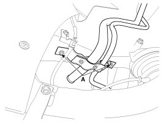

Fuel Filler Neck: Service and Repair
Removal
1. Remove the rear-LH wheel, tire, and the inner wheel house.
2. Disconnect the fuel filler hose (A) and the ventilation hose quick-connector (B).

3. Open the fuel filler door and unfasten the filler-neck assembly mounting screw (A).

4. Remove the filler-neck assembly from the vehicle after removing the bracket mounting bolts (A).

Installation
1. Installation is reverse of removal.
Filler-neck assembly bracket installation nut :
7.8 - 11.8 N.m (0.8 - 1.2 kgf.m, 5.8 - 8.7 lb-ft)